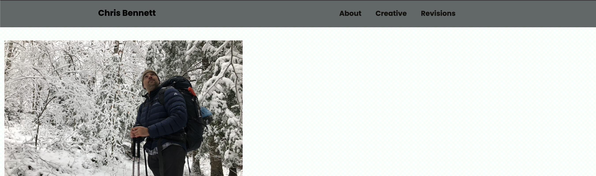
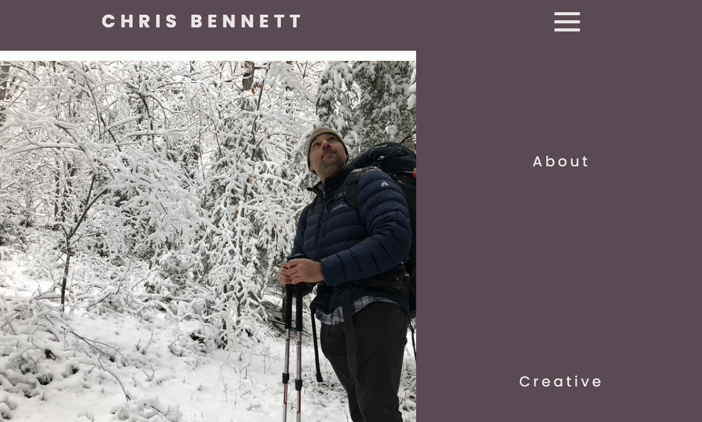

Edits
I had a friend take a look at my project for some feedback.
He liked the pages, but said a responsive navigation bar with
lighter text would be a nice addition.
Below are the changes I made to the site.

The profile picture in the image above has a bit too much
spacing between it and the nav bar.
It does not match the same spacing as the right of 10px. The text
should also be a lighter color.
Changed the text color of the nav bar to look more appealing.
Changed the profile pic to have 10px on the left side and top for even spacing.
The nav bar was not properly sizing for mobile viewing.
Updated the nav bar to include a burger that has a
delay for each link along with a 0.5 second
transition for the slider.